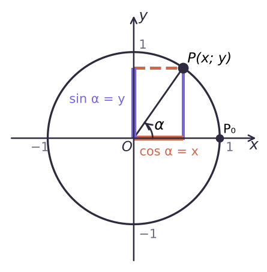
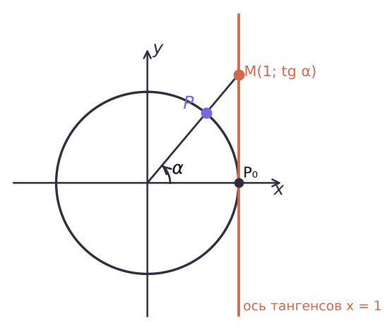

Тригонометрические функции числового аргумента

| α | 0 | π/6 | π/4 | π/3 | π/2 | π | 3π/2 |
|---|---|---|---|---|---|---|---|
| sin α | 0 | 1/2 | √2/2 | √3/2 | 1 | 0 | −1 |
| cos α | 1 | √3/2 | √2/2 | 1/2 | 0 | −1 | 0 |
| tg α | 0 | √3/3 | 1 | √3 | — | 0 | — |

| Функция | D(y) | E(y) |
|---|---|---|
| sin x, cos x | R | [−1; 1] |
| tg x | x ≠ π/2 + πk | R |
| ctg x | x ≠ πk | R |
И таблица значений наизусть